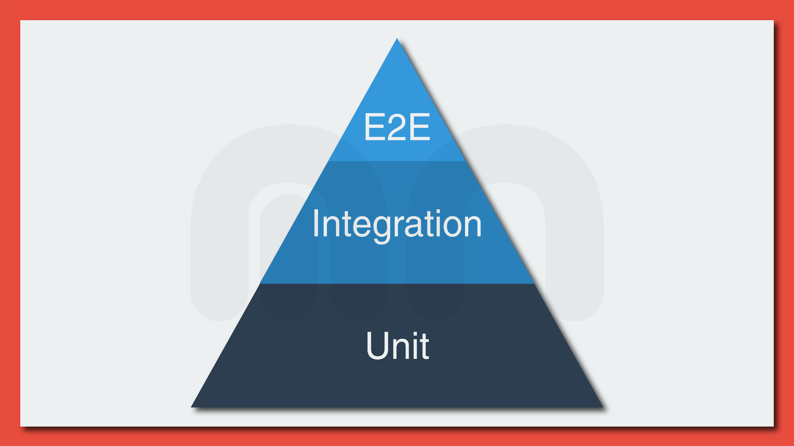

MockMVC in Action!
Marc Nuri
MockMVC
- Main entry point for server-side Spring MVC test support
- Presentation
- Test pyramid
- The Beer CRUD
- Configuration types
- Aspect oriented / Code coverage
- Examples
- Spring Boot (1 / 2) - Spring MVC 4 - Web
- Spring Boot 2 - Spring MVC 5 - Webflux / Project reactor
- Bonus - Introducing WebTestClient
Pyramid of testing and MockMVC

Beer CRUD
MockMVC Configuration types
100% Code Coverage
Advantages of MockMVC - What can you test
- Contract compliance
- Content negotiation headers
- Response codes
- JSON serialization/deserialization
- Availability of request/response headers
- Validation
- Exception handling
- Corner cases and configurations
Let's get Reactive
Q & A
 @MarcNuri
@MarcNuri